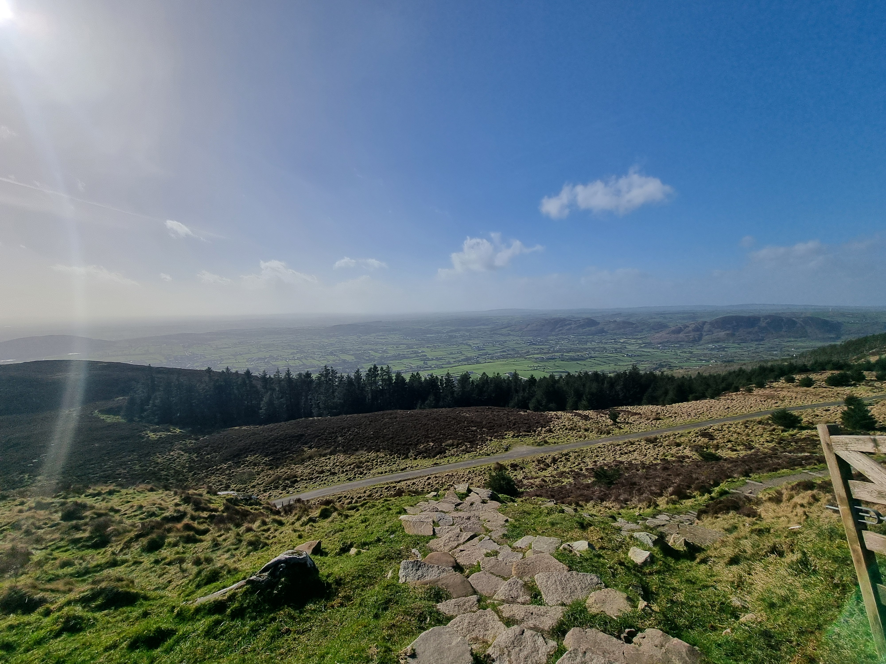
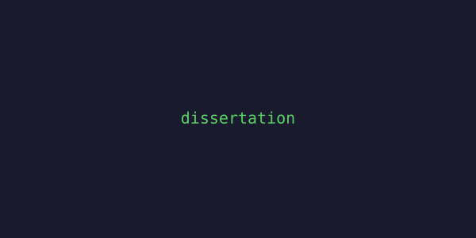
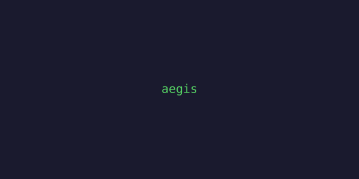
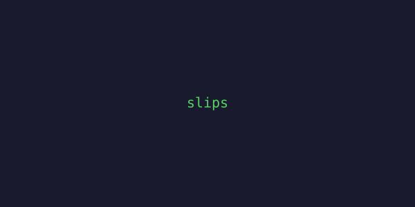
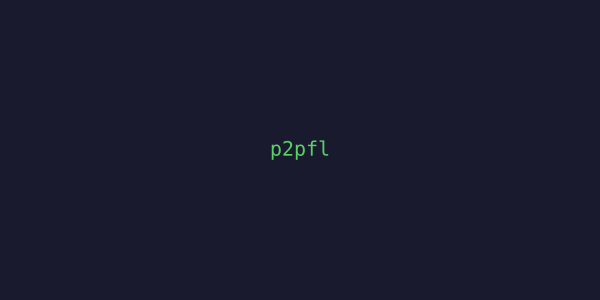
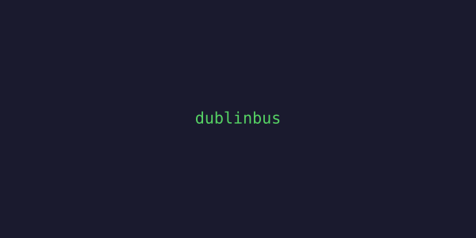
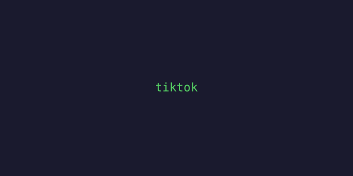

Hey, I'm Oluwateniola, but you can call me Teni (10e) 👋🏿
I'm into system design, development, and how things work at scale. I'm always trying to learn something new - I think that's how you grow.
What really fascinates me is interconnected systems and how data moves, especially now with AI changing everything. There's a lot of exciting work to be done there.
MSc Computer Science @ Trinity College Dublin (also had an offer for Computer Science at UCL, if that matters). BSc Computer Science @ Dublin City University - First Class Honours, ranked 8th out of 110.
Right now I'm deep into my dissertation on internet cryptographic key reuse in Ireland - basically scanning the Irish internet to see how many servers are sharing keys they really shouldn't be sharing.
Check out the research at tcd-student-research.ie. Feel free to check out my LinkedIn and connect.

Slieve Gullion, County Armagh

Irish Internet Key Survey
Scanning Ireland's internet to map cryptographic key reuse across TLS and SSH. Built on sftcd/surveys at TCD.

Aegis
Blockchain-enabled federated learning framework for cyber threat detection. Detects DDoS, botnets, and C&C activity while keeping data decentralized and private.

StratosphereLinuxIPS (Slips)
ML-based behavioural intrusion prevention system. Detects malicious network traffic in real time.


Dublin Bus Watch
Driver safety auditing dashboard for Dublin Bus. Tracks trips, speed, harsh braking events, and flags dangerous driving patterns for review.

TikTok Clone
Full iOS TikTok clone. Swift frontend, Firebase backend. Feed, profiles, likes, the whole thing.
+ more on GitHub
Return offers from all positions.
Software Engineer
Nov 2025 - Apr 2026HubSpot
Worked on customer journey/onboarding, deployed AI agents for Breeze assistant. Java, LogFetch, Vitess.
Software Engineer Intern
June 2025 - Sept 2025Amazon
Built ETL pipelines loading 1.1M records, developed QuickSight dashboards, deployed managed system to production within one month. Return offer. AWS S3, Redshift, Glue, CDK.
Software Engineer Intern
Mar 2024 - Oct 2024Yahoo
Monitored DSP API pipeline, contributed to resolving an API failure - the first incident in 8 years. Return offer. Java, Ember.js, Ansible, Druid.
Software Engineer Intern
May 2023 - Sept 2023Cellusys
Deployed telecom protocol encoding/decoding app to production. Led Agile team of 4. Return offer. Java, Clojure, Vue.js, Wireshark, Docker.
Technical Assistant
Sept 2022 - May 2023Dublin City University
Mentored 100+ students in Python and Bash.
🎓 Education
MSc Computer Science - Trinity College Dublin (in progress)
BSc Computer Science - Dublin City University - First Class Honours, 8th/110
💡 Interests
System design, interconnected systems, security, machine learning, mobile dev, distributed systems.
🌎 Hackathons
Huawei Tech Arena (2x), BNG Hackathon, Hack Ireland. Always looking for the next one.
🛠 Currently
Finishing my dissertation - scanning Irish servers for cryptographic key reuse. Check out the research. Looking for my next opportunity.